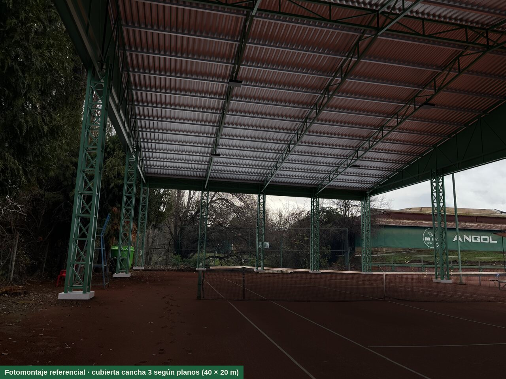
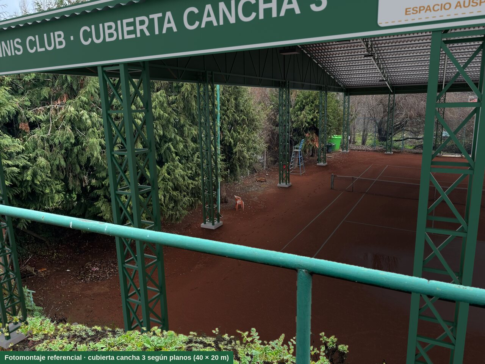
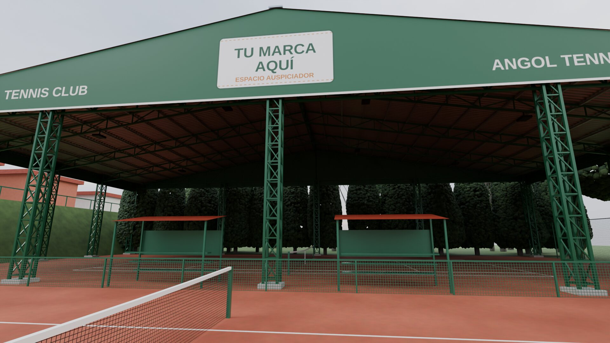
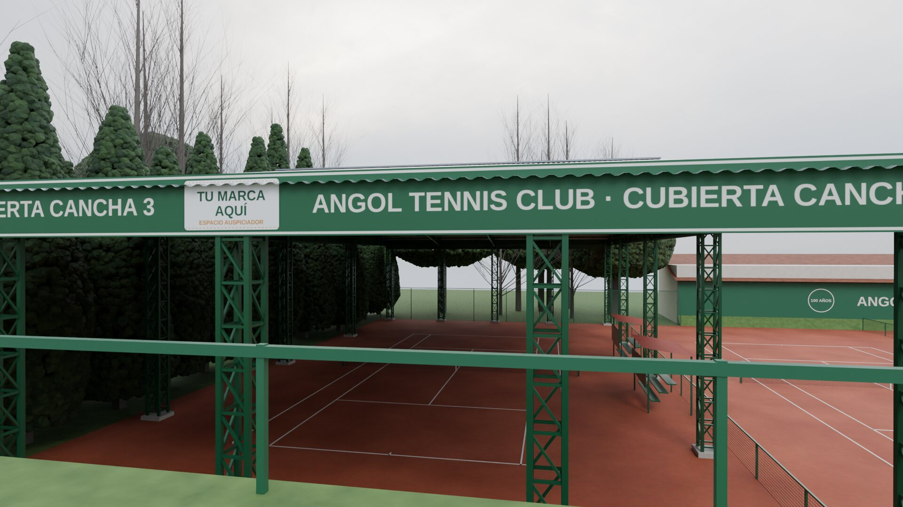
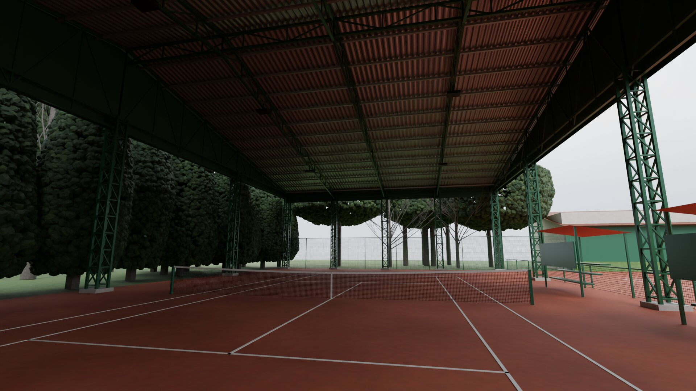

La estructura
- Superficie cubierta
- 800 m²
- Planta
- 40 × 20 m
- Altura en aleros
- 7,5 m
- Altura en cumbrera
- 11 m
- Pilares reticulados
- 16
Cómo se vería










Espacios para el auspiciador
La marca puede ir en tres lugares: pintada en las dos aguas de la cubierta (14 × 8 m cada una, visible desde arriba y desde la calle), en los paneles de los dos costados y en las franjas de los frentes norte y sur. Las imágenes muestran un espacio genérico; se generan de nuevo con el logo de cada empresa.